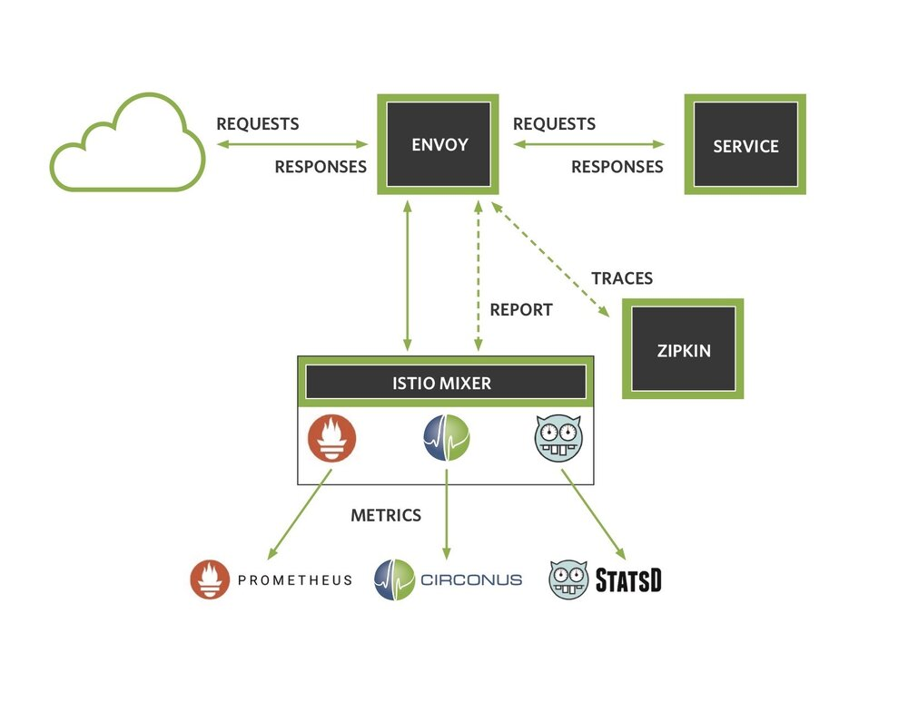
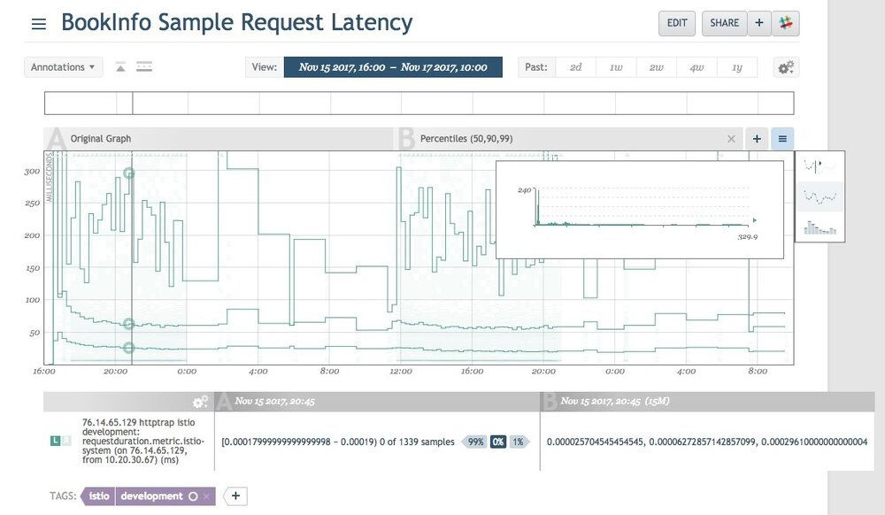

本文英文原文最初发表时间：2017年12月6日
Circonus 参与开源软件有着悠久的传统。因此，当看到 Istio 提供了一个精心设计的接口，通过适配器连接 syndicate 服务遥测，我们就知道 Circonus 适配器可以与 Istio 很好的衔接。Istio 已经被设计成提供高性能、高可扩展的应用控制平面，并且 Circonus 也是按照高性能和可扩展性的核心原则设计的。
今天我们很高兴的宣布 Istio 服务网格 的 Circonus 适配器的可用性。这篇博客文章将介绍这个适配器的开发，并向您展示如何快速启动并运行它。我们知道你会对此非常感兴趣，因为 Kubernetes 和 Istio 可以提供扩展 Circonus 的能力使其远强于其他遥测解决方案。
如果你不知道什么是服务网格那也没关系，其实你已经用了很多年了。互联网的路由基础设施就是一个服务网格；它有利于 TCP 重传、访问控制、动态路由、流量规划等。以往占主导地位的单体web应用正在为微服务让路。Istio 通过一个 sidecar proxy 提供基于容器的分布式应用程序的控制平面功能。它为服务的操作人员提供了丰富的功能来控制 Kubernetes 编排的服务集合，而不需要服务本身来实现任何控制平面的功能集合。
Istio Mixer 提供了一个 适配器 模型，它允许我们通过为 Mixer 创建用于外部基础设施后端接口的 处理器 来开发适配器。Mixer 还提供了一组模版，每个模板都为适配器提供了不同的元数据集。在例如 Circonus 适配器之类的度量适配器，该元数据集包括诸如请求持续时间（request duration）、请求计数（request count）、请求有效负载大小（request payload size）等度量。要激活 Istio 启用的 Kubernetes 集群中的 Circonus 适配器，只需要使用 istioctl 命令将 Circonus operator 配置 注入到 k8s 集群中，metrics 将开始流动。
以下是一个关于 Mixer 如何与这些外部后端服务交互的架构图：

Istio 还包含了 StatsD 和 Prometheus 的 metrics 适配器。然而，Circonus 适配器与其他适配器又存在一些区别。首先，Circonus 适配器允许我们将请求持续时间作为一个直方图来收集，而不仅仅是记录固定的百分位数。这使我们能够计算任何时间窗上的任意分位数，并对所收集的直方图进行统计分析。第二，数据可以基本上永久保留。第三，telemetry 数据被保存在持久的环境中，而独立于 Kubernetes 管理的任何短暂资源之外。
让我们来看看，数据是如何从 Istio 到 Circonus 中的。Istio 的适配器框架暴露了很多可以给适配器开发者使用的方法。Istio 处理的每个请求都生成了一组度量实例用来调用 HandleMetric() 方法。在我们的 operator 配置中，我们可以指定我们要采用的 metric，以及它们的类型：
spec:
# HTTPTrap url, replace this with your account submission url
submission_url: "https://trap.noit.circonus.net/module/httptrap/myuuid/mysecret"
submission_interval: "10s"
metrics:
- name: requestcount.metric.istio-system
type: COUNTER
- name: requestduration.metric.istio-system
type: DISTRIBUTION
- name: requestsize.metric.istio-system
type: GAUGE
- name: responsesize.metric.istio-system
type: GAUGE
在这里，我们配置了一个服从 HTTPTrap 检查的 URL 同时间断发送 metric 的 Circonus 处理程序。在这个例子中，我们指定了四个 metric 的集合，以及它们的类型。请注意，我们把请求持续时间作为一个 DISTRIBUTION 类型来收集，将作为 Circonus 中的直方图进行处理。这将保持时间的保真度，而不是对该 metric 做平均，或者在记录之前计算百分位数（这两种技术都失去了信号的原始值）。
对每个请求，对每个指定的度量请求调用 HandleMetric() 方法。看如下代码：
// HandleMetric submits metrics to Circonus via circonus-gometrics
func (h *handler) HandleMetric(ctx context.Context, insts []*metric.Instance) error {
for _, inst := range insts {
metricName := inst.Name
metricType := h.metrics[metricName]
switch metricType {
case config.GAUGE:
value, _ := inst.Value.(int64)
h.cm.Gauge(metricName, value)
case config.COUNTER:
h.cm.Increment(metricName)
case config.DISTRIBUTION:
value, _ := inst.Value.(time.Duration)
h.cm.Timing(metricName, float64(value))
}
}
return nil
}
在这里我们可以看到，使用一个 Mixer 的上下文以及一组 metric 实例来调用 HandleMetric() 方法，我们遍历每个实例，确定它的类型，并调用适当的 circonus-gometrics 方法。在这个框架中，metric 处理器包含一个 circonus-gometrics 对象，并提交实际的度量值来实现。设置处理器还是比较复杂的，但并不是最复杂的事情：
// Build constructs a circonus-gometrics instance and sets up the handler
func (b *builder) Build(ctx context.Context, env adapter.Env) (adapter.Handler, error) {
bridge := &logToEnvLogger{env: env}
cmc := &cgm.Config{
CheckManager: checkmgr.Config{
Check: checkmgr.CheckConfig{
SubmissionURL: b.adpCfg.SubmissionUrl,
},
},
Log: log.New(bridge, "", 0),
Debug: true, // enable [DEBUG] level logging for env.Logger
Interval: "0s", // flush via ScheduleDaemon based ticker
}
cm, err := cgm.NewCirconusMetrics(cmc)
if err != nil {
err = env.Logger().Errorf("Could not create NewCirconusMetrics: %v", err)
return nil, err
}
// create a context with cancel based on the istio context
adapterContext, adapterCancel := context.WithCancel(ctx)
env.ScheduleDaemon(
func() {
ticker := time.NewTicker(b.adpCfg.SubmissionInterval)
for {
select {
case <-ticker.C:
cm.Flush()
case <-adapterContext.Done()
ticker.Stop()
cm.Flush()
return
}
}
})
metrics := make(map[string])config.Params_MetricInfo_Type)
ac := b.adpCfg
for _, adpMetric := range ac.Metrics {
metrics[adpMetricName] = adpmetric.Type
}
return &handler{cm: cm, env: env, metrics: metrics, cancel: adapterCancel}, nil
}
Mixer 提供了一个生成器类型，我们定义了构建方法。再次，Mixer 的上下文被传递，以及表示 Mixer 配置的环境变量。我们创建了一个新的 circonus-gometrics 对象，并故意禁用了自动 metrics 刷新。我们这样做是因为 Mixer 要求我们在使用 env.ScheduleDaemon() 方法时在 panic 处理器中包装所有的 goroutines 。你会注意到我们通过 context.WithCancel 创建了自己的 adapterContext 。这使得我们可以通过 Mixer 提供的 Close() 方法中调用 h.cancel() 来关闭 metrics 刷新 goroutine 。我们还希望将任何日志事件从 CGM (circonus-gometrics) 发送到 Mixer 的日志中。Mixer 提供了一个基于 glog 的 env.Logger() 接口，但 CGM 使用的是标准的 Golang 日志。如何解决这种不匹配的问题？通过一个 logger bridge，任何 CGM 生成的日志记录语句都可以传递给 Mixer。
// logToEnvLogger converts CGM log package writes to env.Logger()
func (b logToEnvLogger) Write(msg []byte) (int, error) {
if bytes.HasPrefix(msg, []byte("[ERROR]")) {
b.env.Logger().Errorf(string(msg))
} else if bytes.HasPrefix(msg, []byte("[WARN]")) {
b.env.Logger().Warningf(string(msg))
} else if bytes.HasPrefix(msg, []byte("[DEBUG]")) {
b.env.Logger().Infof(string(msg))
} else {
b.env.Logger().Infof(string(msg))
}
return len(msg), nil
}
全适配器的代码，可以查看 Istio github 库。
尽管如此，让我们看看在执行过程中是什么样子的。我安装了 Google Kubernetes Engine，使用 Circonus 加载了 Istio 的开发版本，并部署了于 Istio 一起提供的 BookInfo 示例应用程序。下图是从请求到应用程序的请求持续时间分布的热图。你会注意到高亮显示的时间片段的直方图覆盖。我添加了一个覆盖，添加了一个中位数、第九十和百分位的响应时间；在任意的分位数和时间窗上生成这些数据是有可能的，因为我们将原始的数据存储为对数线性直方图。注意，中位数和第九十百分位数是相对固定的，而第九十五百分位数倾向于在几百毫秒的范围内波动。这种类型的深度可观察性可以用来量化 Istio 本身在版本上的表现，因为 Istio 的开发正在快速迭代。或者，更可能的是，它将用来标识部署的应用程序中的问题。如果你的百分位数不符合你的内部服务水平目标 (SLO) ，这是一个很好的标识，说明你有事情需要做了。毕竟，如果有20个用户中有一个在你的应用程序上有低于标准的体验，难道你不想知道吗？

这看起来很有趣，所以让我们来安排如何让这些东西运行起来。首先我们需要一个 Kubernetes 集群。Google Kubernetes Engine 提供了一种快速获取集群的简单方法。
如果你不想使用 GKE ，那么 Istio 文档中记录了一些其他的方式，这些是我用来启动和运行的注释。在是用 web UI 的方式部署了集群之后，我使用 gcloud 命令行运行程序。
# set your zones and region
$ gcloud config set compute/zone us-west1-a
$ gcloud config set compute/region us-west1
# create the cluster
$ gcloud alpha container cluster create istio-testing --num-nodes=4
# get the credentials and put them in kubeconfig
$ gcloud container clusters get-credentials istio-testing --zone us-west1-a --project istio-circonus
# grant cluster admin permissions
$ kubectl create clusterrolebinding cluster-admin-binding --clusterrole=cluster-admin --user=$(gcloud config get-value core/account)
此时，你有了一个 Kubernetes 集群，让我们来按照 Istio 文档 安装 Istio
# grab Istio and setup your PATH
$ curl -L https://git.io/getLatestIstio | sh -
$ cd istio-0.2.12
$ export PATH=$PWD/bin:$PATH
# now install Istio
$ kubectl apply -f install/kubernetes/istio.yaml
# wait for the services to come up
$ kubectl get svc -n istio-system
此时，可以安装 BookInfo 示例程序
# Assuming you are using manual sidecar injection, use `kube-inject`
$ kubectl apply -f <(istioctl kube-inject -f samples/bookinfo/kube/bookinfo.yaml)
# wait for the services to come up
$ kubectl get services
如果你在使用 GKE ，你还需要配置网管和防火墙规则
# get the worker address
$ kubectl get ingress -o wide
# get the gateway url
$ export GATEWAY_URL=<workerNodeAddress>:$(kubectl get svc istio-ingress -n istio-system -o jsonpath='{.spec.ports[0].nodePort}')
# add the firewall rule
$ gcloud compute firewall-rules create allow-book --allow tcp:$(kubectl get svc istio-ingress -n istio-system -o jsonpath='{.spec.ports[0].nodePort}')
# hit the url - for some reason GATEWAY_URL is on an ephemeral port, use port 80 instead
$ wget http://<workerNodeAddress>/<productpage>
示例程序应该启动并运行起来了。如果你在使用 Istio 0.3 或低于此版本的程序，你需要安装我们构建好并嵌入了 Circonus 适配器的镜像。
加载 Circonus 的资源定义（在 Istio 0.3 或 低于此版本上执行此操作）。将此内容保存为 circonus_crd.yaml
kind: CustomResourceDefinition
apiVersion: apiextensions.k8s.io/v1beta1
metadata:
name: circonuses.config.istio.io
labels:
package: circonus
istio: mixer-adapter
spec:
group: config.istio.io
names:
kind: circonus
plural: circonuses
singular: circonus
scope: Namespaced
version: v1alpha2
现在开始应用文件：
$ kubectl apply -f circonus_crd.yaml
编辑 Istio 部署 以加载已经构建好的 Circonus 适配器 Docker 镜像（同样，如果你使用 Istio v0.4 或更高的版本，则不需要执行此操作）
$ kubectl -n istio-system edit deployment istio-mixer
修改混合器的二进制镜像，来使用 istio-circonus 的镜像：
image: gcr.io/istio-circonus/mixer_debug
imagePullPolicy: IfNotPresent
name: mixer
好的，到现在。抓取一个 operator 配置 的副本，并将你的 HTTPTrap submission URL 插入其中。你需要一个 Circonus 账户 来获取它，如果你没有，可以创建一个免费的账户，同时添加一个 HTTPTrap 检测。
现在可以应用你的 operator 配置：
$ istioctl create -f circonus_config.yaml
向应用发送些请求，你就可以看到流向你的 Circonus 仪表盘的 metrics ！如果你遇到任何问题，请随时在 Circonus labs slack 上联系我们，或者直接在 Twitter 上 @phredmoyer 。
这是一个很有意思的集成，Istio 绝对是 Kubernetes 的前沿，但值得注意的是在几个月前它已经成熟了，应该可以考虑用来部署新的微服务。我要感谢一些帮助过的人。 Matt Maier 是 Circonus gometrics 的维护者，在整合 Istio 处理器框架和 CGM 提供了宝贵的价值。Zack Butcher 和 Douglas Reid 都是 Istio 项目上的 hackers，几个月前我在一个线下的 meetup 上与他们谈论到了 Istio ，他们发出了令人鼓舞的 “send the PRs!’ 。Martin Taillefer 在 Circonus 适配器开发的最后阶段给予了很好的反馈和建议。Shriram Rajagopalan 在最后阶段使用 CircleCI 帮助完成了测试工作。最后，感谢 Circonus 团队赞助这项工作，以及 Istio 社区的开放文化，使这项创新成为可能。